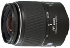
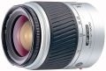
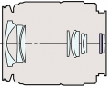

器材库 > 35mm画幅AF变焦镜头 > AF 28-100/3.5-5.6(D)

详细规格
镜头类型
标准变焦镜头
发布日期
2003-04-08
焦距
28mm-100mm
最大光圈
f/3.5-f/5.6
镜头结构
10片/8组
非球面镜片
1片
最近对焦距离
48cm
最大放大倍率
0.25倍
驱动马达
AF马达
镜头卡口
Minolta/Konica-Minolta/Sony AF
防抖
否
颜色
黑色, 珍珠白
尺寸
66 x 78mm
重量
240g
重庆猿人2014-06-10 19:044.67 分
操作性 5.00耐用性 4.50性价比 5.00解像力 4.50色彩还原 4.50机械结构 4.50
chhfchhf2006-11-26 20:400.5 分
操作性 0.50耐用性 0.50性价比 0.50解像力 0.50色彩还原 0.50机械结构 0.50
trompeter2006-09-16 01:273.67 分
操作性 4.00耐用性 3.50性价比 4.50解像力 3.00色彩还原 3.50机械结构 3.50
xshxh2005-08-20 08:403.75 分
操作性 4.00耐用性 4.00性价比 3.50解像力 3.50色彩还原 3.50机械结构 4.00
银杏2004-11-17 10:054.08 分
操作性 4.00耐用性 4.00性价比 4.00解像力 4.00色彩还原 4.50机械结构 4.00
mm52004-09-28 12:294 分
操作性 3.50耐用性 4.00性价比 4.50解像力 4.00色彩还原 4.50机械结构 3.50
产品图 / 样片
外观图-黑色

外观图-白色

光学结构图
评测 / 相关文章
该产品暂无存档的评测文章